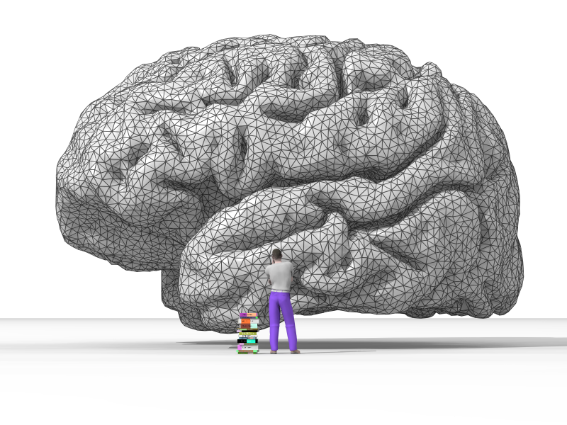

Computer Science
Introduction
Computer science is the study of computation, information, and automation. It spans theoretical disciplines such as algorithms and theory of computation to applied disciplines including hardware and software design.
History
The earliest foundations of computer science predate the invention of the modern digital computer. Machines for calculating fixed numerical tasks such as the abacus have existed since antiquity.

Wilhelm Schickard designed the first working mechanical calculator in 1623. Charles Babbage started the design of the first automatic mechanical calculator, his Difference Engine, in 1822.
Computer science began as a distinct academic discipline in and early . The world's first computer science degree program began at the University of Cambridge in .
Areas of Computer Science
Computer science spans a range of topics from theoretical studies of algorithms to the practical issues of implementing computing systems.
Algorithms and Data Structures
Algorithms and data structures are central to computer science. They are the studies of commonly used computational methods and their efficiency.
Artificial Intelligence
Artificial intelligence aims to synthesize goal-orientated processes such as problem-solving, decision-making, and learning found in humans and animals.

Software Engineering
Software engineering is the study of designing, implementing, and modifying software to ensure it is of high quality, affordable, and maintainable.
Computer Security
Computer security is a branch of computer technology with the objective of protecting information from unauthorized access or modification.
Programming Paradigms
Programming languages can be used to accomplish different tasks in different ways. Common programming paradigms include:
- Functional programming — treats computation as the evaluation of mathematical functions
- Imperative programming — uses statements that change a program's state
- Object-oriented programming — based on the concept of objects which contain data and code